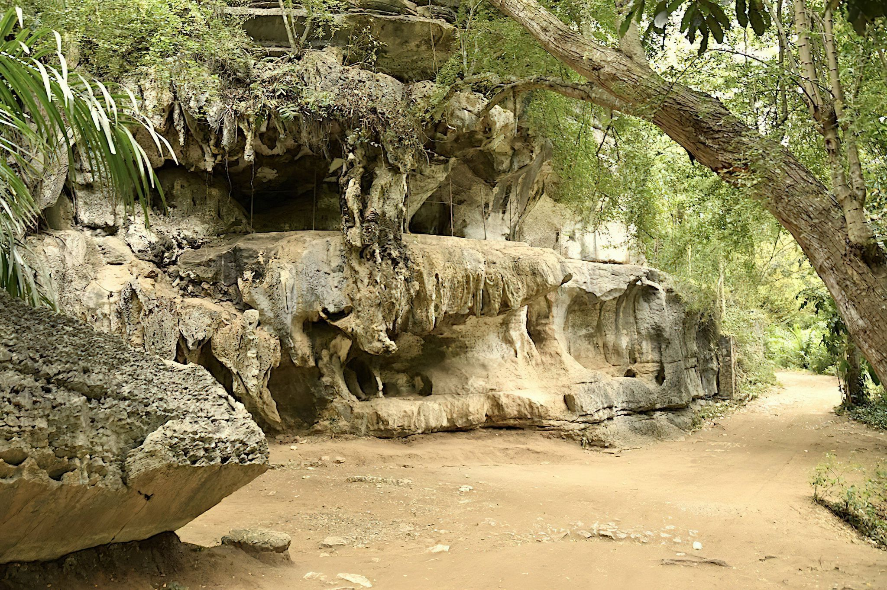
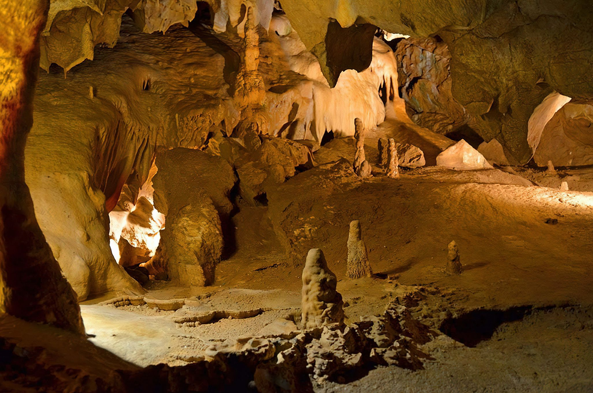

The Amboni Caves are the most extensive limestone caves in East Africa. They are located 8 km in Kiomoni Village north of Tanga City in Tanzania off the Tanga-Mombasa road. The caves were formed about 150 million years ago during the Jurassic age. It covers an area of 234 km². According to researchers the area was under water some 20 million years ago. History has it that the caves were originally thought to extend 200 km or more. There are altogether ten caves but only one is used for guided tours. The Amboni caves, which are home to a large number of bats, were traditionally thought to be home to various spirits and are still used for worship and rituals by the locals.
Amboni Limited, a company which was then operating sisal plantations in Tanga Region acquired the area in 1892. The company notified the British colonial government about the caves who in turn declared the caves a conservation area in 1922.
It is not known when the caves were exactly discovered but reports indicate that ethnic groups such as the Segeju, Sambaa, Bondei and Digo who lived near the caves used it for prayers. In 1963, the then government of Tanganyika handed over the caves to the Department of Antiquities.
Best time to visit: Year-round - enquire for seasonal highlights
Recommended duration: 1 - 3 days recommended
Entry cost: Park fees vary - contact us for current rates


Safari Packages

Amboni Caves Tours, Tanga
Price on request
Amboni Caves Tours from Tanga City, a visit to the Amboni Caves and a Kiomoni village all in one go during this half-day tour from Tanga City. Alongside a private guide, take a tou
View ItineraryReady to explore Amboni Caves?
Request a Quote